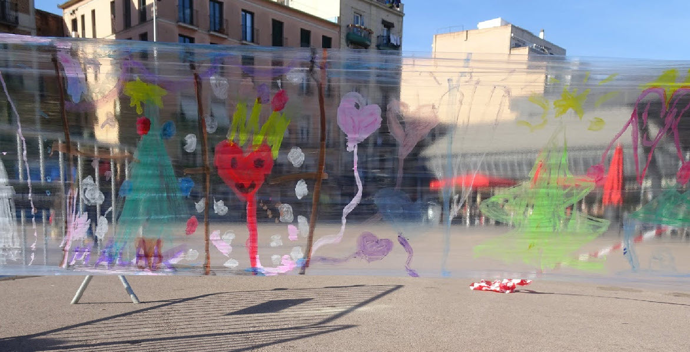
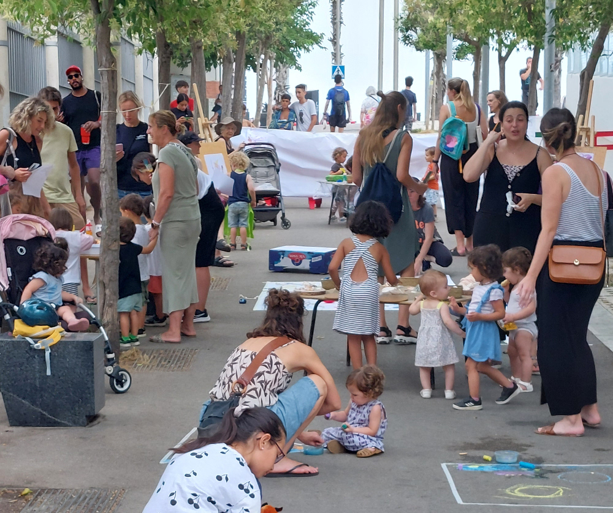

Els infants jugant al carrer son un bon indicador de la qualitat de vida comunitària
Posar l'infant al centre i visibilitzar les seves necessitats com a ciutadà de ple dret
Implicar a tot el teixit social en clau comunitària en la tasca sòcioeducativa dels infants
Fer esdevenir l'espai públic un agent educatiu del territori
Reactivar i reforçar el barri des de la mirada comunitària